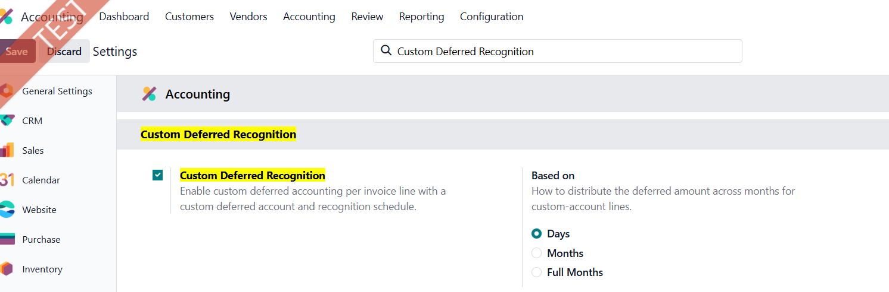
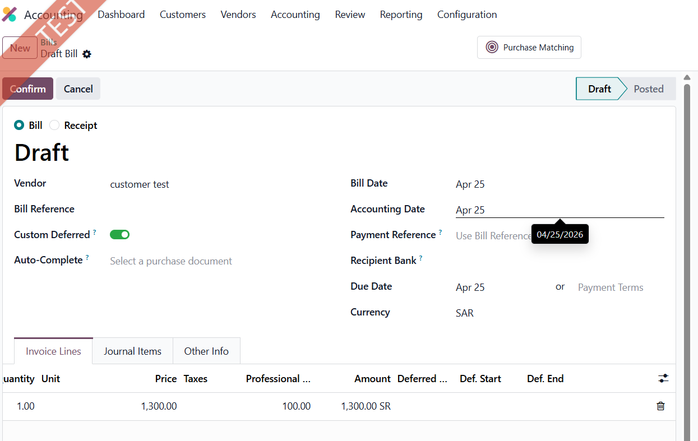
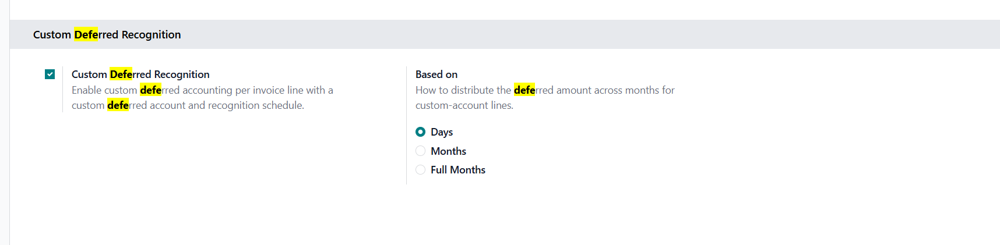

Gain full control over deferred revenue and expense recognition by selecting deferred accounts directly on invoices and journal entries — no longer limited to company-level defaults.
Set deferred accounts on vendor bills and customer invoices line by line — override the company default whenever needed.
Define deferred accounts on any journal entry line with the same flexibility and full control as on invoices.
On posting, a full monthly recognition schedule is generated automatically. Past periods are posted; future ones stay in draft.
Choose between Days, Months, or Full Months — matching Odoo's standard "Based on" logic.
Reset entries to draft, re-post, or cancel individually. Resetting the source entry automatically clears all related recognition entries.
A smart button on every invoice and journal entry gives instant access to the full recognition schedule with real-time status.



Go to Accounting → Settings → Custom Deferred Recognition and activate it. Choose your preferred distribution method (Days / Months / Full Months).
Toggle Custom Deferred on any invoice or journal entry. Three columns appear on the lines: Deferred Account, Start Date, End Date.
Select the deferred account and set the recognition period for each line. Lines without a deferred account are posted normally — no forced changes.
On confirmation, the module creates the initial deferral entry and the full monthly recognition schedule. Past periods are posted immediately; future entries wait in draft.